01
Simulation de station météo
Implémentation des fonctions et d'algorithmes complexes tels que le décalage de tableaux, et affichage des données sous forme d'histogramme.
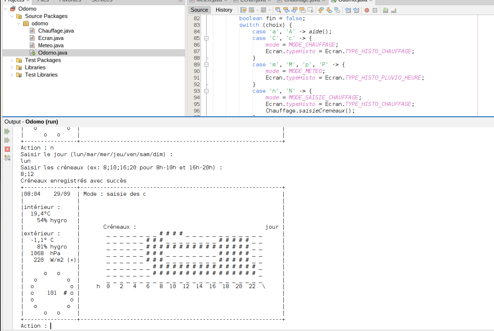
Java
disponible dès janvier 2027
étudiante en 2e année de BUT informatique
voir les projets ↓Travaux réalisés dans le cadre du BUT. Dernière mise à jour : 26/09
Cliquez sur un projet pour ouvrir sa fiche : cahier des charges, résultats, compétences, outils.
Il n'y a rien encore ici pour l'instant.
01
Implémentation des fonctions et d'algorithmes complexes tels que le décalage de tableaux, et affichage des données sous forme d'histogramme.

Java
02
Jeu fonctionnel comportant différents niveaux de difficulté avec une documentation et des tests unitaires complets.
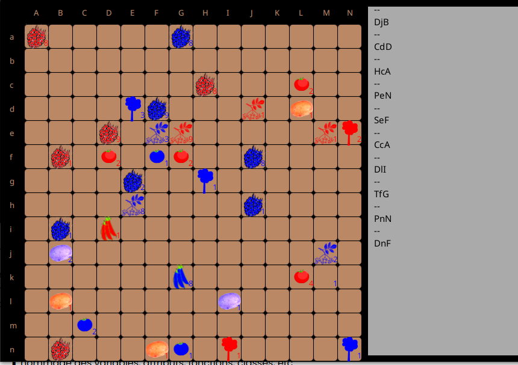
Java
03
Un environnement Linux complet (VSCode avec extensions, Git) ainsi qu’un tutoriel complet écrit sur les étapes à suivre pour reproduire à l’identique l’installation
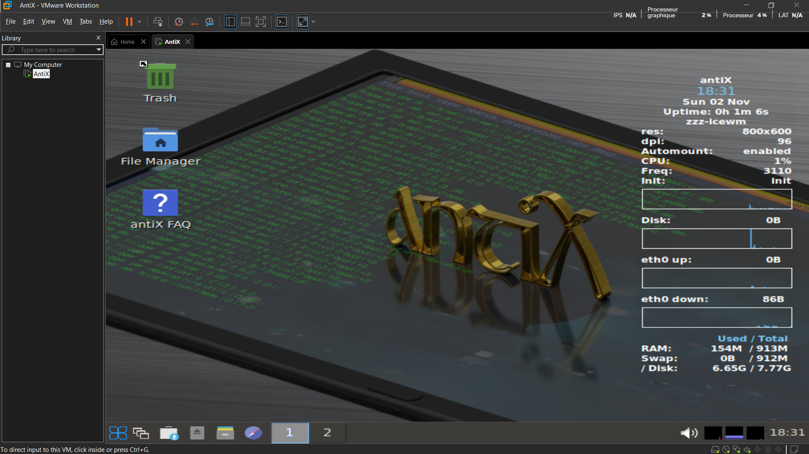
Bash
04
Script de création et de remplissage livrés en deux semaines. Gestion des clés étrangères validée par tests progressifs après correcion des erreurs initiales. Répartition des tâches en parallèles entre les deux membres de l’équipe
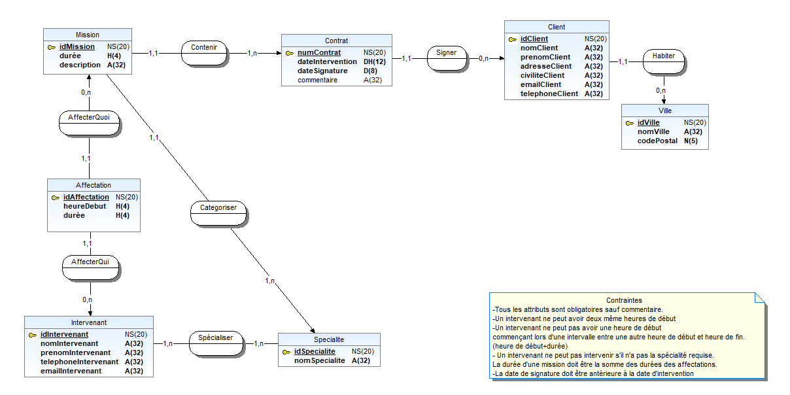
SQL
WinDesign
05
Refonte complète du site en séparant la partie HTML du CSS, réduisant le code source, tout en améliorant l’accessibilité (W3C & Lighthouse) avec l’accès à plusieurs pages.
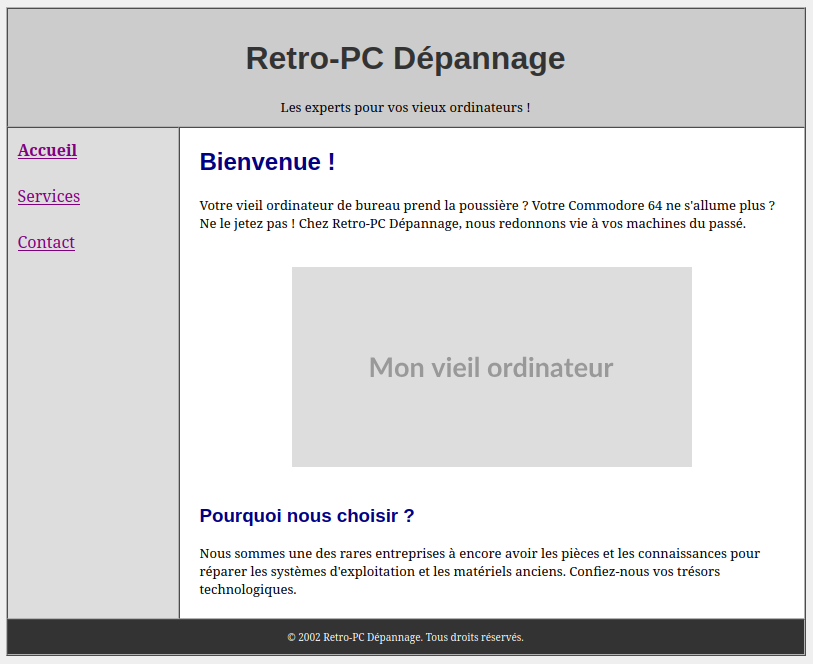
HTML & CSS
06
Identification des six fonctions principales de l’entreprise et analyse de son environnement grâce aux outils PESTEL et Porter. Proposition d’une solution résolvant la baisse du bénéfice basée sur l’exportation vers un public plus large
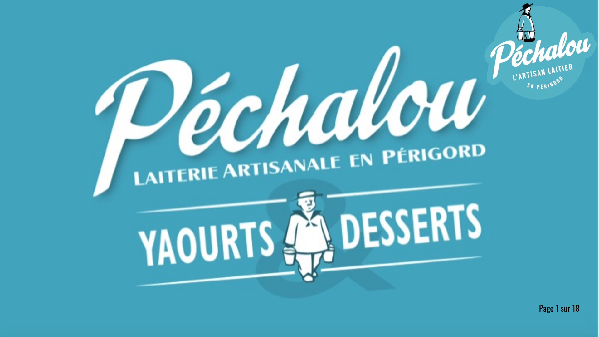
Gestion de projet
Analyse stratégique
07
Livrables reprenant les points importants du projet, l’application fonctionnelle répondant aux besoins éprouvés comportant un programme de calcul pour les aspects complexes d’épreuves fictives, un système de drag-and-drop pour l’interface utilisateur , avec tests unitaires.
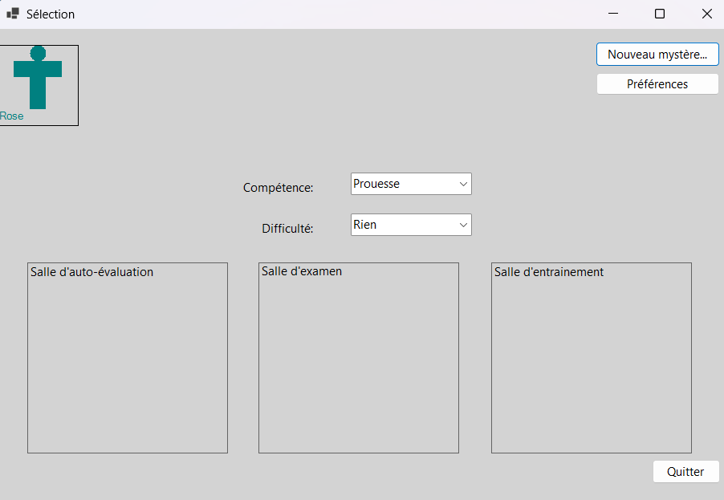
C#
08
Classes implémentées à partir des interfaces fournies. Trois algorithmes de coloration validés par tests unitaires JUnit, tous passés avec succès.
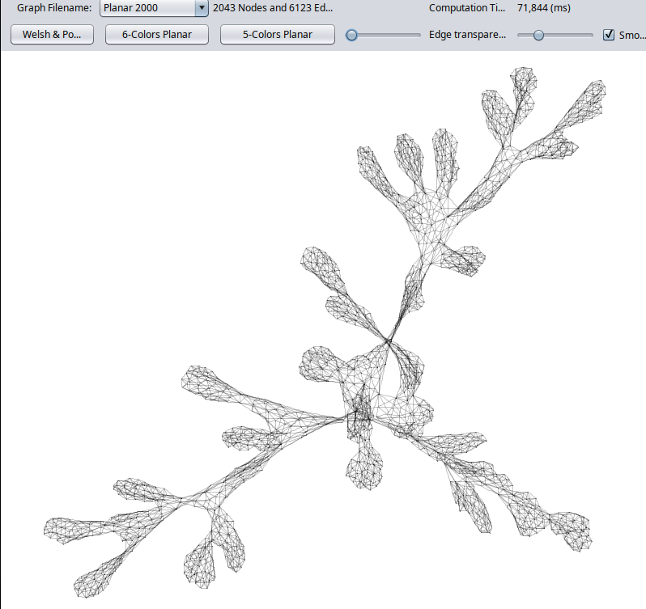
Java
09
Serveur de partage de fichiers Nextcloud connecté à OnlyOffice avec plugins ajoutés (Calendar, Passwords, Draw.io). Configuration réseau rendue persistante après redémarrage. Accès sécurisés par HTTPS et authentification à deux facteurs (TOTP).
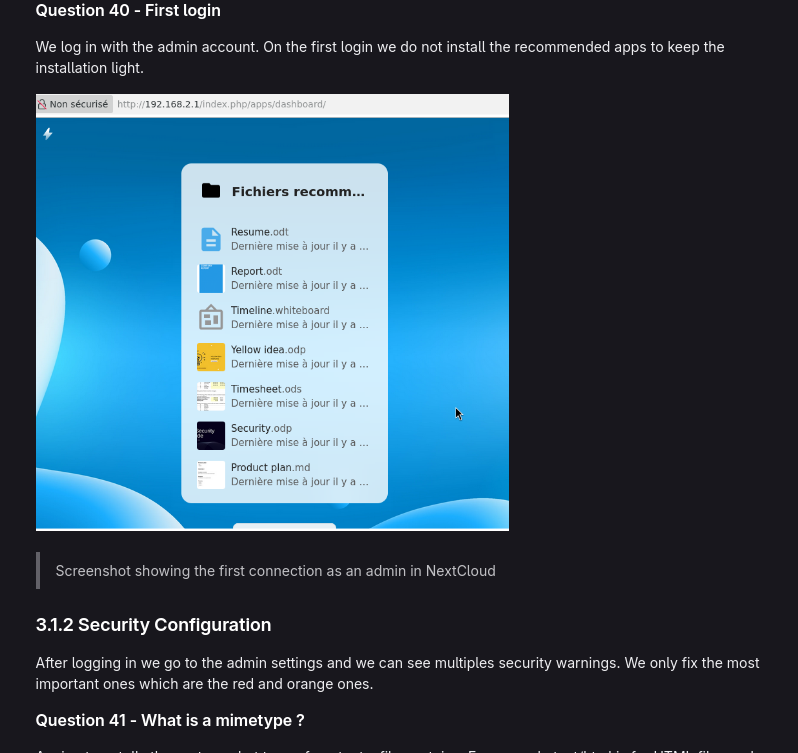
Linux/Bash
10
Ensemble des fonctionnalités demandées implémentées, ajout d’une roue de couleurs personnalisée et une mise à jour en temps réel du temps restant avant la prochaine action.
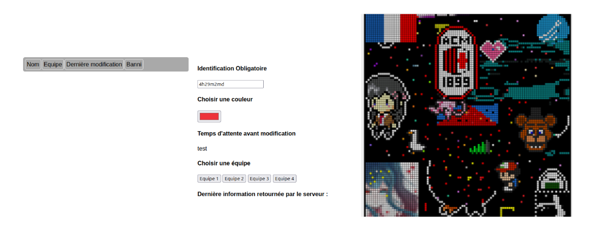
Java Script
11
Production d’affiches en différentes versions affichables pour l’ensemble de l’établissement ainsi qu’un plan d’affichage complet pour les trois étages du bâtiment.
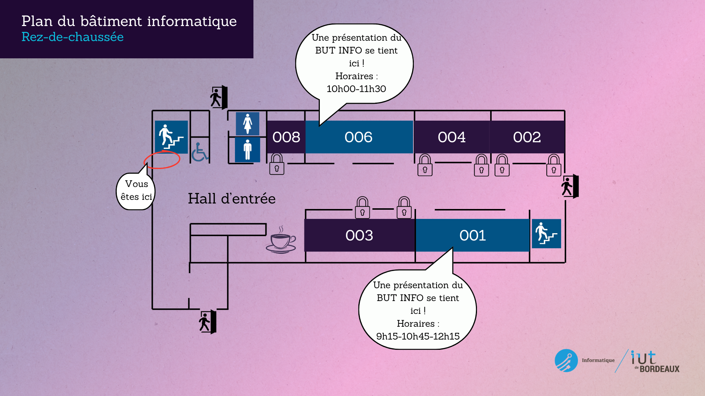
Gestion de projet
Communication visuelle
12
Conception d’une base de données SQL Server, à partir d’un MCD. Développement d’une application C# WinForms qui affiche les données
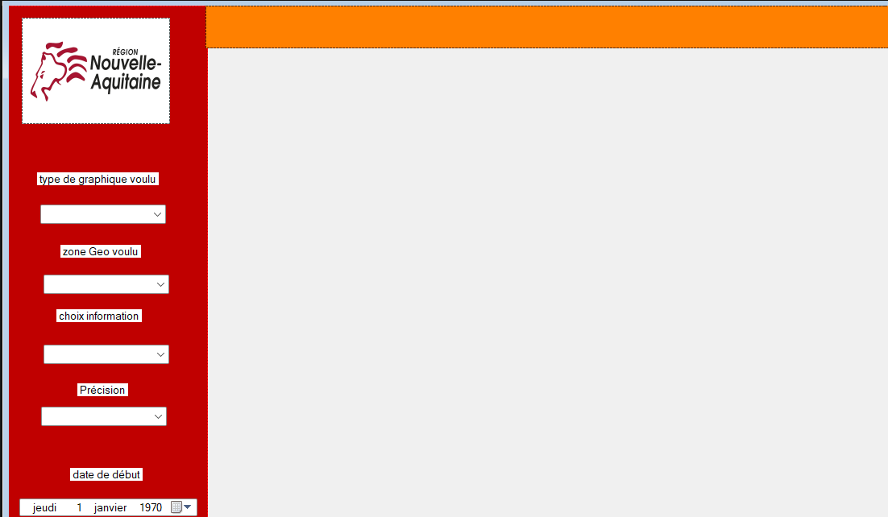
SQL
C#
Python
Gestion de projet
Ce que je construis en dehors des cours.
Site fonctionnel avec accueil, projets universitaires filtrables par semestre ou catégorie, projets personnels, compétences, profil et contact
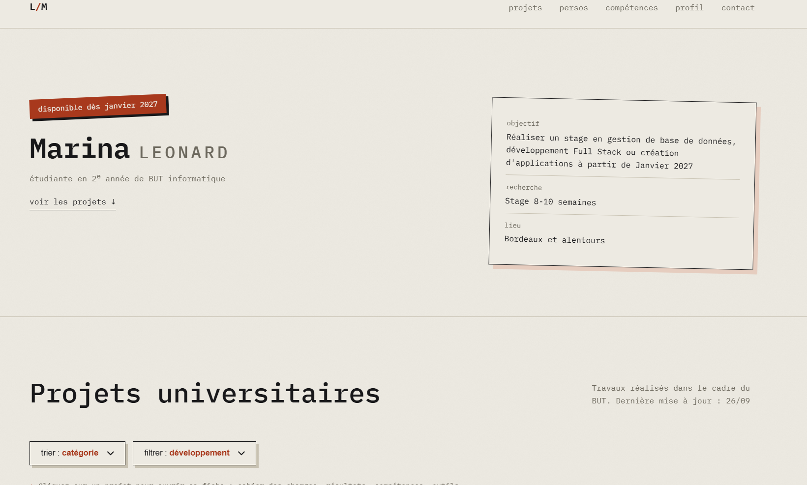
HTML
CSS
JavaScript
D'autres projets viendront s'ajouter ici. Ce n'est que le début.
Ce sont les outils que j'ai réellement utilisés en cours et en projet.
langages
web
données
programmation
outils
Je suis Marina, étudiante en 2e année de BUT Informatique à Bordeaux.
Selon les projets, je passe de Python à Java, C# ou SQL. J'aime comprendre comment les choses tiennent ensemble avant de les construire. Jusqu'ici, j'ai appris en cours et en projet universitaire : concevoir une base de données, structurer une application, mener un projet à plusieurs.
La suite, pour moi, c'est de mettre ce que j'ai appris au service d'une équipe et de progresser à ses côtés.
voir mon CV ↗Une question, une proposition, l'envie d'échanger : un message suffit.